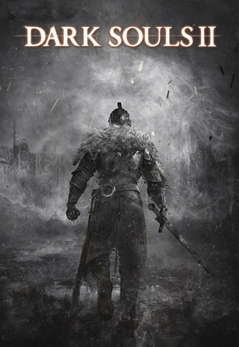

Inicio
Dark Souls II (ダークソウルII Dāku Sōru Tsū?) é um jogo do género RPG de ação produzido pela empresa japonesa FromSoftware e o terceiro da série Souls. Depois de alguns adiamentos, foi lançado pela Bandai Namco Games entre março e abril de 2014 para Microsoft Windows, PlayStation 3 e Xbox 360. Dark Souls II foi anunciado durante os Spike Video Game Awards em dezembro de 2012. Hidetaka Miyazaki, que foi director dos dois jogos anteriores da série, Demon's Souls e Dark Souls, serviu como supervisor, enquanto que a direcção ficou a cargo de Tomohiro Shibuya e Yui Tanimura. O game se passa dentro do mundo fictício de Drangleic, existindo menções e complementos ao enredo do game anterior, Dark Souls. O jogo usa servidores dedicados para o multijogador, e usa dois modos: jogador vs. ambiente (PvE) e jogador vs. jogador (PvP), para além de ter componentes cooperativos. Tal como em jogos anteriores da série, Dark Souls II tem uma jogabilidade desafiadora, mas com gráficos mais poderosos e um sistema de inteligência artificial mais avançado.
História
A história de Dark Souls II começa com um humano que se tornou morto-vivo, amaldiçoado a nunca morrer e condenado a se tornar um Hollow, um ser semelhante a um zumbi sem memórias ou propósito. O protagonista também é conhecido como o Portador da Maldição. Para quebrar a maldição, o morto-vivo viaja para o reino caído de Drangleic e recebe a tarefa do Emerald Herald de obter quatro Grandes Almas de poderosos Antigos cujos nomes há muito são esquecidos e proibidos. Uma vez obtido, o Emerald Herald direciona os mortos-vivos para "Procurar o Rei" na capital. Depois de lutar contra os restos mortais dos guardas reais, o jogador encontra a Rainha Nashandra, que revela que o rei falhou em seu dever e fugiu de seu reino há muito tempo. Ela pede ao protagonista para matar o rei. Perto do final da missão da Rainha, o jogador descobre que a ruína do reino foi na verdade causada por Nashandra. Ela veio até o rei e o enganou para lançar uma invasão malfadada através do mar nas terras dos Gigantes. Ela cobiçou suas almas e procurou roubar seu poder. Embora o ataque tenha conseguido roubar o poder não especificado do gigante, os gigantes retaliaram. Invadindo Drangleic, os Giants acabaram destruindo o reino. Com seu reino em ruínas, o rei descobriu o verdadeiro propósito de Nashandra e se trancou dentro da Undead Crypt. Para enfrentar Nashandra, o personagem do jogador viaja até a fortaleza de Aldia, irmão do rei, para obter o Ashen Mist Heart, um artefato que permite uma forma de viagem no tempo, acessando as "memórias" dos cadáveres. O jogador deve entrar nas memórias de um gigante falecido para derrotar o Lorde Gigante durante a invasão e reivindicar seu poder para si. Confrontando o Emerald Herald uma última vez, ela afirma que Nashandra é um fragmento de Manus, o chefe final da expansão Artorias of the Abyss em Dark Souls. Ela então pede ao protagonista para colocar Nashandra para descansar e tomar o Trono do Desejo. Na versão Scholar of the First Sin do jogo, a história base muda ligeiramente, principalmente com a adição de Aldia após a derrota de Nashandra. Se o jogador derrotou King Vendrick, Aldia tenta ajudar o protagonista a entender que pode haver uma saída para o ciclo interminável de morte e renascimento. O jogador pode escolher: ele pode assumir o trono, permitindo assim que o ciclo da Era do Fogo e das Trevas continue; ou o jogador pode fugir do trono, resistindo aos efeitos de Hollowing e seguindo seu próprio caminho desconhecido além da luz ou da escuridão.
Expansões
A história de Dark Souls II envolveu uma entidade abissal conhecida como Manus quebrando em vários fragmentos. Esses fragmentos ganharam consciência individual e começaram a ter fome de poder. Uma dessas peças adotou a aparência de uma rainha e viajou para uma terra estrangeira para manipular seu rei para uma guerra, levando ao conflito primário do jogo. O enredo de The Lost Crowns se concentra em mais três desses fragmentos autônomos que partiram para vários reinos em busca de controle.
Critica
| Empresa | Nota |
|---|---|
| IGN | 9/10 |
| GameSpot | 9/10 |
| Edge | 9/10 |
| Polygon | 9/10 |
| PlayStation Official Magazine – UK | 9/10 |